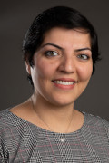

|
|  |
Yalda Mohsenzadeh |
| Dr. Mohsenzadeh does a lot of interdisciplinary research combining the power of AI (artificial intelligence) with biology, medical sciences, and other fields of study. Some of her work includes the study of human brain activity and memory and using special forms of AI to analyze brain scans and other medical data. In August 2023, Dr. Mohsenzadeh was interviewed by CBC about technological advancements in AI and neuroscience. |
|
Anwar Haque |
| Dr. Haque, who is currently serving as the undergraduate chair of the Computer Science department, performs a lot of research in the area of networking, cyber security, and smart applications. However, some of his most interesting research relates to the use of drones for real-world applications. For example, using drones flying near tall buildings and using AI (artificial intelligence) to automatically detect cracks or other problems in the infrastructure. |
|
Daniel Lizotte |
| Dr. Lizotte, who is currently serving as the graduate chair of the Computer Science department, does research in the area of machine learning and biostatistics. Similar to Dr. Mohsenzadeh, Dr. Lizotte performs a lot of research that relates to health and medical data. For example, some of his work is based on the use of machine learning algorithms to predict risks of diseases in patients. He runs a lab group known PHI Lab which stands for Predictive Health Informatics Lab. |
|